Rebranding emasphere.com · 2026
Ce qui est construit, comment on travaille (avec l'IA, le vault Obsidian, l'inspection du front-end et le drag & drop HubSpot), l'état de chaque page et ce qu'il reste à décider. Édition du 01/09/2026.
Le nouveau site n'est pas dessiné page par page : c'est un système. Un texte validé (le « copy deck ») entre d'un côté ; une page complète, cohérente avec la charte, sort de l'autre — en aperçu local et en page HubSpot prête à éditer. Tout ce qui suit découle de ce principe.
EMAsphere-Rebrand-TESTv3), recréées à chaque évolution — rien n'est publiéOù l'on en est : le design system, les modules, les templates et l'outillage sont en place ; toutes les pages existent en aperçu et en brouillon HubSpot ; le rendu a été recetté sur le moteur HubSpot réel. Ce qui manque est du contenu (validation des textes, NL, méta-descriptions, images définitives) et des décisions (domaine de staging, mise en production) — voir §6.
content/<page>/fr.md. Source unique. Statut draft → final quand marketing valide.npm run pages lit la structure du deck (titres, listes, citations, tableaux) et choisit les modules. Personne n'écrit de HTML.preview/site/) + le rendu HubSpot exact (npm run preview:hubspot) pour recetter.npm run verify : 5 lints. Une couleur en dur, un champ inconnu, un contenu inventé → bloqué.EMAsphere-Rebrand-TEST (jamais le thème live), pages recréées en brouillon, journal mis à jour.[PROPOSITION] ce qu'elle propose.Le projet est un vault Obsidian (dossier Rebranding EMAsphere 2026, dépôt GitHub privé). Il contient la documentation (décisions, grammaire de composition, catalogue des modules, journal), les copy decks, le thème et les générateurs. L'assistant IA (claude-ema) lit ce vault avant d'agir : c'est ce qui l'empêche de « faire à sa manière ». Concrètement :
claude-ema puis /rebranding — l'assistant se place dans le projet, vérifie ses outils et charge les règles.C'est la méthode utilisée cette semaine pour la passe qualité. Elle ne demande aucune compétence technique :
.card, .hero__copy, ema-band--dark…).| Remarque (capture) | Correction appliquée au système |
|---|---|
| Encadrés plats, texte trop grand | Titres de carte réduits (1,15–1,35 rem), 4 dispositions de cartes (cartes, tuiles, icônes, lignes) choisies par le contenu, relief sur fond sombre |
| L'arc revient trop souvent | Budget de formes : une bande sur deux nue, plus de repli vers l'arc, spirale réservée à la bande avant le footer |
| Cinq profils centrés sans structure | Disposition « registre » : numéro · titre · texte, filets |
| Menu sur deux lignes, footer sombre | Barre d'onglets défilante ; footer clair avec bandeau mint et bloc d'appel |
| Frise de tuiles et mur de témoignages du Figma non intégrés | Décor tiles animé disponible dans 21 modules ; layout wall des témoignages |
Le thème enfant EMAsphere-Rebrand-TEST est installé dans le portail HubSpot (compte 4550859). Il hérite du thème actuel et ajoute 35 modules et 165 templates. Chaque page générée y existe en brouillon (nom [TEST v3] …, adresse test-…-emasphere-2026-v3).
[TEST v3] Bibliothèque) montre chaque module avec ses variantes.p-… pré-rempli, ou un template de gabarit (fiche connecteur, retour d'expérience).Où regarder le rendu exact : bouton « Aperçu » de l'éditeur (rendu HubSpot réel), ou en local npm run preview:hubspot qui sert le thème dans l'espace @preview du compte.
Toutes les pages sont construites et visibles. Le statut « Brouillon à relire » signifie que le texte attend une validation marketing (aucun deck n'est encore marqué final) — pas que la page manque.
| Page | Nature | Texte | Langues | Modules | Brouillon HubSpot (ID) | Aperçu |
|---|---|---|---|---|---|---|
Notre histoirea-propos | Créée — nouveau messaging | Brouillon à relire | EN · FR · NL | 11 | 220805202051 | ouvrir |
Budget & prévisionnelbudget-previsionnel | Gardée du site actuel, rebrandée | Brouillon à relire | EN · FR · NL | 17 | 220805202053 | ouvrir |
Nous rejoindrecarrieres | Créée — nouveau messaging | Brouillon à relire | EN · FR · NL | 10 | 220805202055 | ouvrir |
Vue d'ensemblecomment-ca-marche | Créée — nouveau messaging | Brouillon à relire | EN · FR · NL | 9 | 220805202069 | ouvrir |
Conditions généralesconditions-generales | Créée — nouveau messaging | Brouillon à relire | FR | 10 | 220805202071 | ouvrir |
Nos connecteursconnecteurs | Gardée du site actuel, rebrandée | Brouillon à relire | EN · FR · NL | 9 | 220805202057 | ouvrir |
Consolidationconsolidation | Gardée du site actuel, rebrandée | Brouillon à relire | EN · FR · NL | 17 | 220805202059 | ouvrir |
Contactcontact | Gardée du site actuel, rebrandée | Brouillon à relire | EN · FR · NL | 3 | 220800215453 | ouvrir |
Clientsecosysteme-clients | Créée — nouveau messaging | Brouillon à relire | EN · FR · NL | 10 | 220800215425 | ouvrir |
Partenairesecosysteme-partenaires | Créée — nouveau messaging | Brouillon à relire | EN · FR · NL | 11 | 220805202061 | ouvrir |
Fonctionnalitésfonctionnalites | Créée — nouveau messaging | Brouillon à relire | EN · FR · NL | 10 | 220805202076 | ouvrir |
Accueilhome | Créée — nouveau messaging | Brouillon à relire | EN · FR · NL | 13 | 220800215427 | ouvrir |
IAia | Créée — nouveau messaging | Brouillon à relire | EN · FR · NL | 12 | 220800215429 | ouvrir |
Insights Platforminsights-plateformes | Créée — nouveau messaging | Brouillon à relire | EN · FR · NL | 8 | 220800215431 | ouvrir |
Politique de confidentialitépolitique-de-confidentialite | Créée — nouveau messaging | Brouillon à relire | FR | 6 | 220800215475 | ouvrir |
CFO stratégiquespour-qui-cfo | Créée — nouveau messaging | Brouillon à relire | EN · FR · NL | 10 | 220800215433 | ouvrir |
Business Leaderspour-qui-dirigeants | Créée — nouveau messaging | Brouillon à relire | EN · FR · NL | 9 | 220800215435 | ouvrir |
Éditeurs de logicielspour-qui-editeurs-logiciels | Créée — nouveau messaging | Brouillon à relire | EN · FR · NL | 9 | 220800215437 | ouvrir |
Acheter ou construirepourquoi-acheter-ou-construire | Créée — nouveau messaging | Brouillon à relire | EN · FR · NL | 10 | 220800215439 | ouvrir |
Données AI-readypourquoi-donnees-ai-ready | Créée — nouveau messaging | Brouillon à relire | EN · FR · NL | 11 | 220800215441 | ouvrir |
EMASPHERE vs BIpourquoi-vs-bi | Créée — nouveau messaging | Brouillon à relire | EN · FR · NL | 10 | 220805202063 | ouvrir |
Analytics & décisions IAproduit-analytics-ia | Créée — nouveau messaging | Brouillon à relire | EN · FR · NL | 8 | 220805202065 | ouvrir |
Enrichissement & couche sémantiqueproduit-couche-semantique | Créée — nouveau messaging | Brouillon à relire | EN · FR · NL | 9 | 220800215443 | ouvrir |
Data Foundationproduit-data-foundation | Créée — nouveau messaging | Brouillon à relire | EN · FR · NL | 10 | 220800215445 | ouvrir |
E-booksressources-ebooks | Créée — nouveau messaging | Brouillon à relire | EN · FR · NL | 6 | 220800215553 | ouvrir |
Webinarsressources-webinars | Créée — nouveau messaging | Brouillon à relire | EN · FR · NL | 6 | 220800215564 | ouvrir |
EMASPHEREsolution-emasphere | Créée — nouveau messaging | Brouillon à relire | EN · FR · NL | 13 | 220800215449 | ouvrir |
Trésorerietresorerie | Gardée du site actuel, rebrandée | Brouillon à relire | EN · FR · NL | 11 | 220805202067 | ouvrir |
Collections : 93 fiches connecteur (FR/EN/NL, 34 éditeurs) et 37 retours d'expérience, générés depuis content/_collections/ avec un gabarit unique ; index « Retours d'expérience » et catalogue « Connecteurs » en pages cœur. Cible technique pour la suite : HubDB (une table, une page dynamique) plutôt que 130 pages.
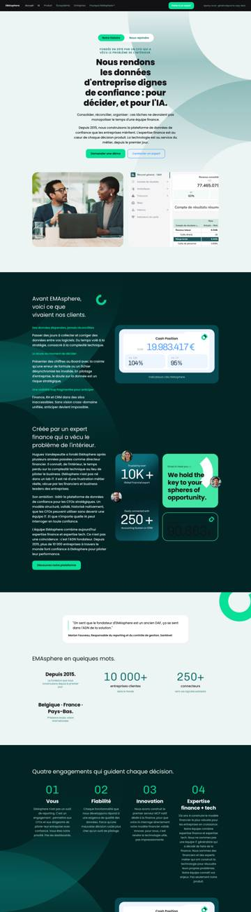
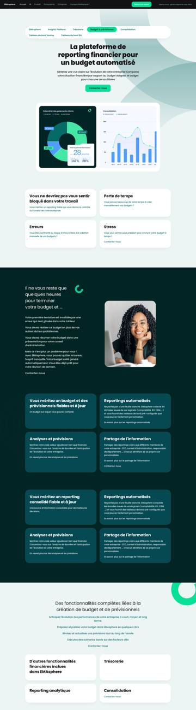
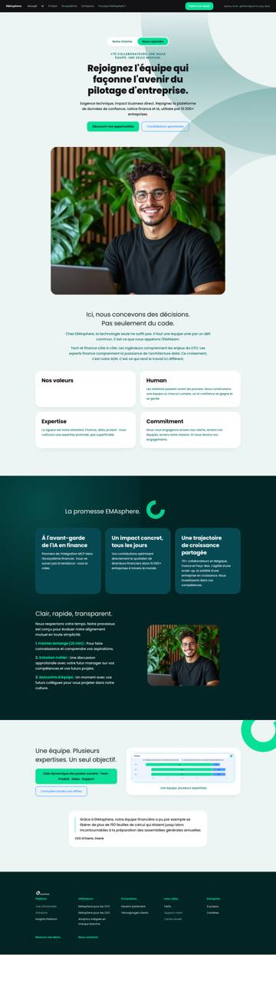
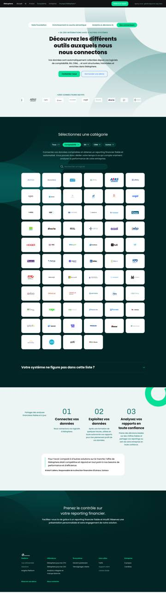
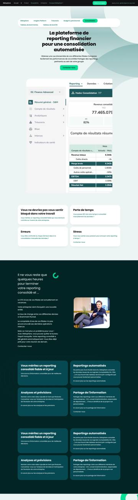
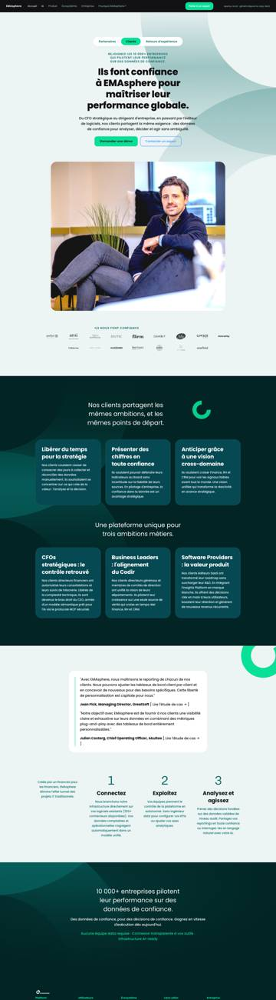
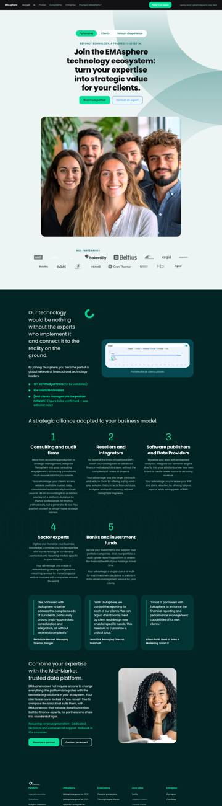
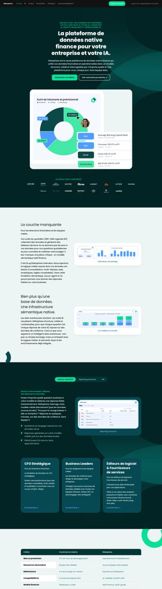
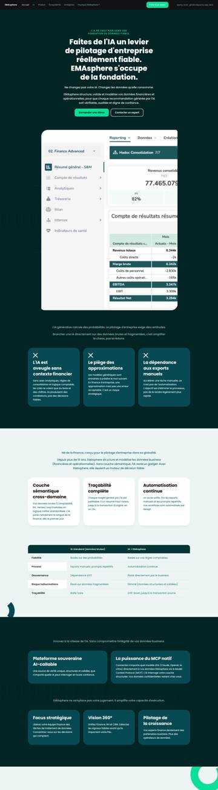
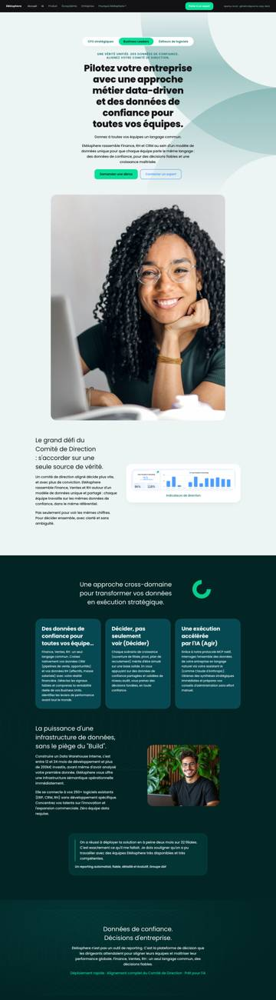
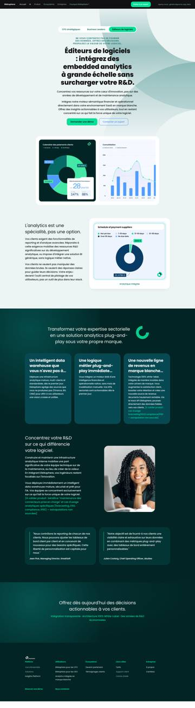
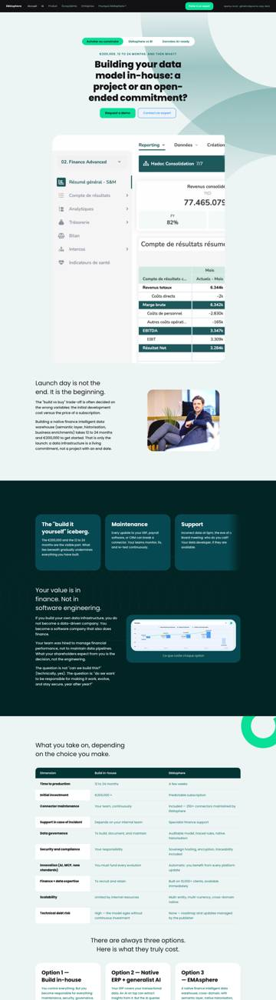
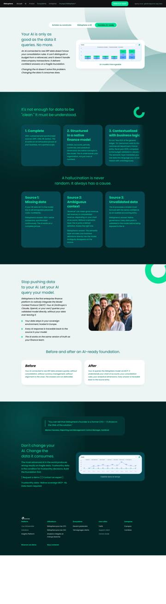
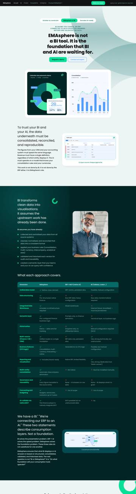
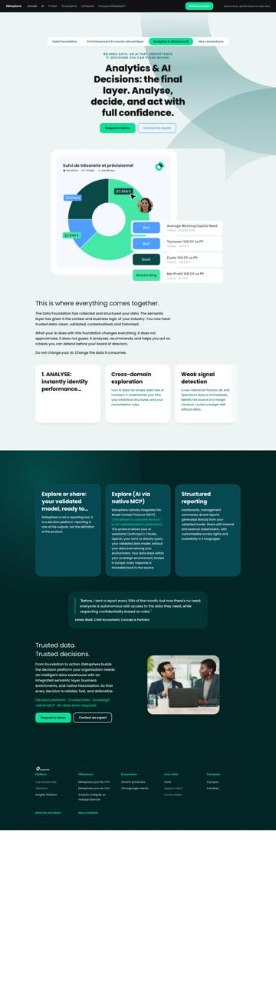
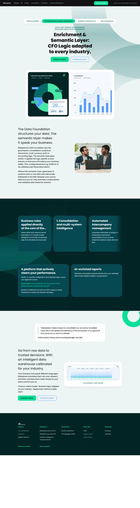
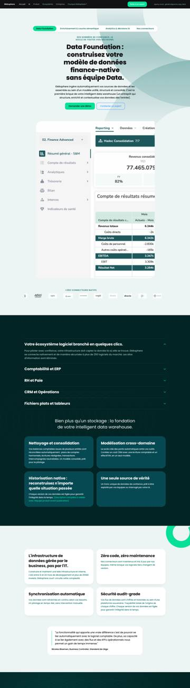
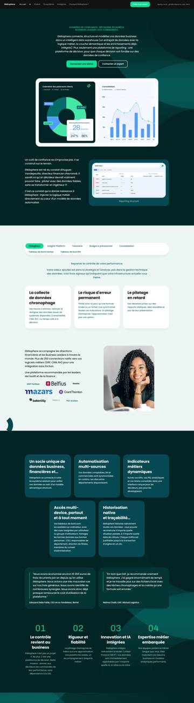
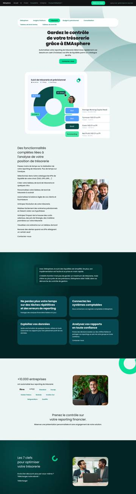
| Module | Rôle |
|---|---|
accordion | Accordéon (FAQ, objections) |
alert-band | Bandeau d'alerte |
anchor-nav | Sommaire collant |
button | Bouton |
carousel | Rail défilant de cartes (auto-défilement optionnel) |
comparison-table | Tableau comparatif (✓/✗ accessibles) |
connector-catalogue | Catalogue des 272 connecteurs filtrable par catégorie + recherche |
cta-band | Appel à l'action de fin de page |
data-table | Tableau de données |
design-tokens | Charte visuelle (Bibliothèque) |
disclosure | Liste dépliante simple |
feature-grid | Grille de fonctionnalités |
form | Formulaire HubSpot mis en page (jamais recréé en HTML) |
hero | Ouverture de page (titre, sous-titre, 2 boutons, visuel à droite/gauche/dessous) |
image-figure | Image légendée |
logo-cloud | Mur / frise de logos (registre de 51 logos) |
mega-menu | Menu principal (panneaux, burger mobile, ouverture au survol) |
pillar-grid | Grille de cartes — 4 dispositions (cartes, tuiles, icônes, lignes) |
pull-quote | Citation détachée |
qa | Question / réponse |
site-footer | Pied de page clair (bandeau mint, réseaux, bloc d'appel) |
spacer | Espace |
stat-band | Bandeau de chiffres clés |
statement | Argumentaire : titre, texte, puces, visuel ou graphique |
statement-band | Bande de déclaration |
story-cards | Cartes de retours d'expérience / articles |
testimonials | Témoignages : 1, 2, 3 colonnes, rail ou mur défilant |
timeline | Frise de dates (tuiles mint, animées) |
video-dialog | Vidéo en boîte de dialogue |
status: final) — 0 validé à ce jour.| Je veux… | Où / comment |
|---|---|
| Voir le site navigable | npm run preview:serve → http://localhost:8765/preview/site/home.html (ou le lien hébergé fourni avec ce guide) |
| Voir toutes les pages d'un coup | preview/site/_planche.html |
| Suivre l'avancement | preview/site/_tableau-de-bord.html et docs/SUIVI-REBRANDING.xlsx (12 onglets) |
| Comprendre une décision | docs/JOURNAL-DEPLOIEMENTS.md (chronologique), docs/18-ETAT-ET-REPRISE.md (état), docs/19-GRAMMAIRE-FIGMA.md (règles) |
| Rejoindre le chantier | docs/27-ONBOARDING-EQUIPE.md — une heure |
| Écrire une page | content/README.md + content/_TEMPLATE.md, puis /rebranding dans l'assistant |
Document généré le 01/09/2026 depuis les données du projet (tools/build-guide.py). Les identifiants HubSpot changent à chaque recréation des brouillons ; le tableau de bord fait foi.